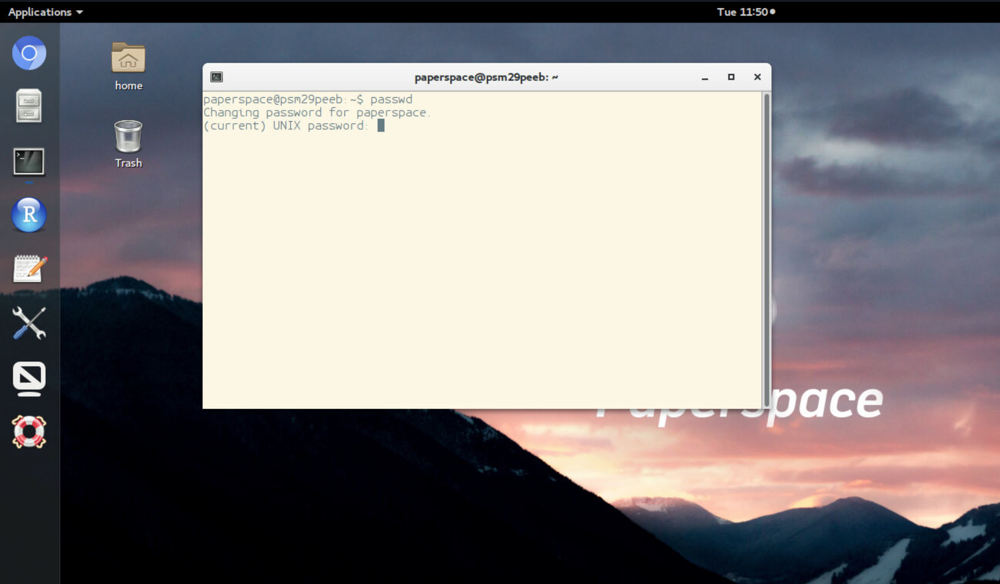

Cloud Desktop GPUs
Overview
Cloud desktops with various GPU configurations are available from Paperspace. With Paperspace, you can access a full Linux desktop running Ubuntu 16.04 all from within a web browser. An SSH interface is also available, as is a browser based RStudio Server interface (via SSH tunnel).
Paperspace offers an RStudio TensorFlow template with NVIDIA GPU libraries (CUDA 8.0 and cuDNN 6.0) pre-installed, along with the GPU version of TensorFlow v1.4 and the R keras, tfestimators, and tensorflow packages. Follow the instructions below to get started with using RStudio on Paperspace.
Getting Started
To get started, sign up for a Paperspace account here: https://www.paperspace.com/account/signup (you can use the RSTUDIO promo code when you sign up to receive a $5 account credit).

After you’ve signed up and verified your account email, you will be taken to a Create Machine page. Here you’ll select various options including your compute region and machine template. You should select the RStudio template:

Be sure to select one of the GPU instances (as opposed to the CPU instances). For example, here we select the P4000 machine type which includes an NVIDIA Quadro P4000 GPU:

After your machine is provisioned (this can take a few minutes) you are ready to access it via a web browser. Hover over the machine in the Paperspace Console and click the “Launch” link:

After the machine is launched you’ll see your Linux desktop within the browser you launched it from. You may need to use the Scaling Settings to adjust the desktop to a comfortable resolution:

You should also change your default password using the passwd utility (your default password should have been sent to you in an email titled “Your new Paperspace Linux machine is ready”):

You now have a Linux desktop equipped ready to use with TensorFlow for R! Go ahead and run RStudio from the application bar:

NVIDIA GPU libraries (CUDA 9 and cuDNN 7) are pre-installed, along with the GPU version of TensorFlow v1.7. The R keras, tfestimators, and tensorflow packages are also pre-installed, as are all of the packages from the [tidyverse[(https://www.tidyverse.org/)] (dplyr, ggplot2, etc.).
An important note about the pre-installed dependencies: Since the NVIDIA CUDA libraries, TensorFlow, and Keras are all pre-installed on the Paperspace instances, you should not use the install_tensorflow() or install_keras() functions, but rather rely on the existing, pre-configured versions of these libraries. Installing or updating other versions of these libraries will likely not work at all!
Automatic Shutdown
You can set Paperspace machines to automatically shutdown when they have not been used for a set period of time (this is especially important since machine time is billed by the hour). You can access this setting from the Paperspace console for your machine:

Here the auto-shutdown time is set to 1 day, however you can also choose shorter or longer intervals.
Terminal Access
Web Terminal
You can use the Open Terminal command on the Paperspace console for your machine to open a web based terminal to your machine:

You’ll need to login using either the default password emailed to you when you created the machine or to the new password which you subsequently created.
SSH Login
You can also login to your Paperspace instance using a standard SSH client. This requires that you first Assign a public IP address to your machine (note that public IP addresses cost an additional $3/month).
Once you have your public IP address, you can SSH into your machine as follows:
$ ssh paperspace@<public IP>You’ll need to login using either the default password emailed to you when you created the machine or to the new password which you subsequently created.
RStudio Server
You may prefer using the RStudio Server browser-based interface to the virtual Linux desktop provided by Paperspace (especially when on slower internet connections). This section describes how to access your Paperspace machine using an SSH tunnel.
To start with, follow the instructions for SSH Login immediately above and ensure that you can login to your machine remotely via SSH.
Once you’ve verified this, you should also be able to setup an SSH tunnel to RStudio Server as follows:
$ ssh -N -L 8787:127.0.0.1:8787 paperspace@<public-ip>You can access RStudio Server by navigating to port 8787 on your local machine and logging in using the paperspace account and either the default password emailed to you when you created the machine or to the new password which you subsequently created.